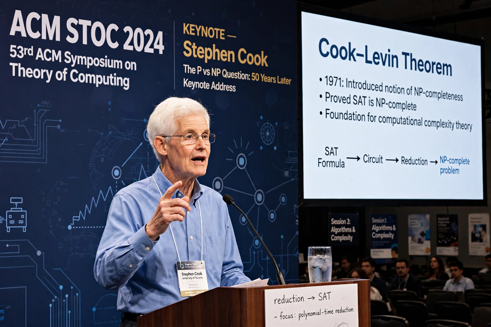

Stephen Cook

Stephen Arthur Cook (born 14 December 1939) is an American–Canadian computer scientist and mathematician who has made major contributions to the fields of complexity theory and proof complexity. His seminal 1971 paper "The complexity of theorem-proving procedures" formalised the notion of NP-completeness, showing that the Boolean satisfiability problem (SAT) is NP-complete — a result now called the Cook–Levin theorem, since Leonid Levin independently proved an analogous result. Cook received the Turing Award in 1982 for this work.
| Born | 14 December 1939, Buffalo, New York, US |
|---|---|
| Institutions | University of Toronto |
| Known for | Cook–Levin theorem; NP-completeness; proof complexity; PV theory |
| Awards | Turing Award (1982) |
Biography
Cook was born in Buffalo, New York, and received his bachelor's degree from the University of Michigan in 1961 and his PhD from Harvard University in 1966. After a brief period at the University of California, Berkeley, he joined the University of Toronto in 1970, where he has spent the bulk of his career and is a University Professor in the Department of Computer Science and Department of Mathematics.
Research
Cook's 1971 paper introduced the class NP, the concept of polynomial-time reducibility, and the first NP-complete problem. Richard Karp's subsequent paper showed that 21 important combinatorial problems are also NP-complete, establishing the concept's centrality. The question of whether P equals NP, which grows out of Cook's work, is one of the Millennium Prize Problems. Cook later helped found the field of proof complexity, studying how hard it is to prove tautologies in various proof systems, and developed the theory PV to formalise polynomial-time reasoning. His name is also attached to the Cook–Reckhow definition of a propositional proof system. In 2018 Cook was appointed an Officer of the Order of Canada.